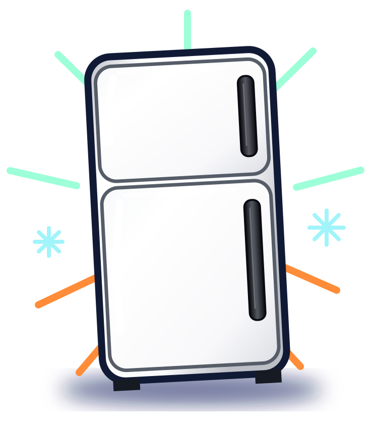

MAKE SOME NOISE
Share, sign when the petition opens, and help us reach grocery stores, repair shops, appliance makers, and the people who love their fridge.
INDEPENDENT EMOJI CAMPAIGN · EST. 2026
THE WORLD HAS A FAX MACHINE EMOJI.
Seriously. 📠 exists. 🪠 exists. But the humble refrigerator? Nothing. Help us fix this tiny, ridiculous injustice.
✳ THE PETITION IS BEING PREPARED. SHARE THE CAMPAIGN NOW.
IT'S FREE. IT'S COOL. TAKES A SECOND.

We have 🍳 cooking, 🥫 canned food, 🧊 ice, and even 📠 a fax machine. But there is no standard refrigerator emoji. A fridge is understood worldwide: a home, groceries, leftovers, food safety, the cold chain, and connected appliances. It deserves a place on the keyboard.
Share, sign when the petition opens, and help us reach grocery stores, repair shops, appliance makers, and the people who love their fridge.
Collect real usage evidence, create legible unbranded emoji artwork, and prepare a documented technical proposal.
Follow the official proposal process when submissions reopen in 2027. Unicode decides on the evidence, not the signature count.
Refrigeration techs. Grocery clerks. Smart-appliance teams. Food-service workers. Families. Manufacturers. Independent stores. You're all invited.
For businesses: Share the campaign, allow an approved QR poster near checkout, or publicly endorse the idea. No sponsorship, exclusivity, or brand ownership is required. Please don't place stickers on products or bags without the store's permission.
GET THE 3 × 2 INCH ZEBRA LABEL (ZPL) ↗Print labels only after the petition is live so every scan has a real action to take.
ONE LITTLE PICTURE. ONE VERY BIG KEYBOARD.
IT'S FREE. IT'S COOL. TAKES A SECOND.